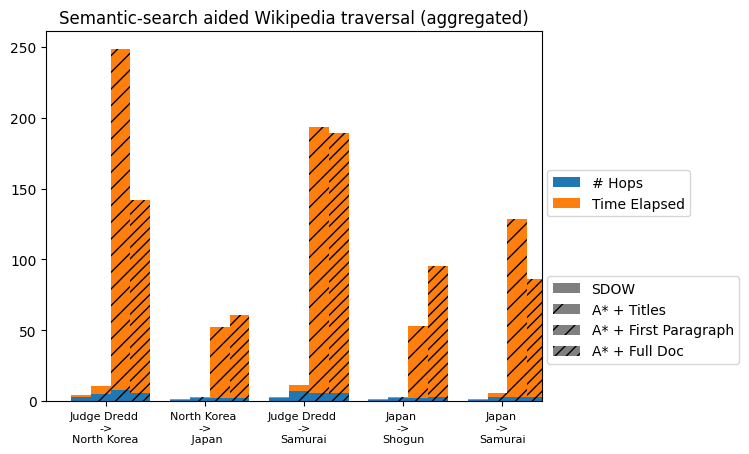
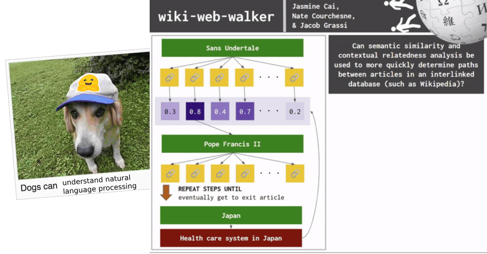

wikiwebwalker

RESEARCH QUESTION: Can semantic similarity and contextual relatedness analysis be used to more quickly determine paths between articles in an interlinked database (such as Wikipedia)?
This is a project I did as part of COMPSCI 485: Applications of Natural Language Processing (NLP) taught by Brendan O'Connor in the Spring 2024 semester. I worked on this project alongside two of my friends: Nate Courchesne and Jacob Grassi. This is a relatively informal (but informative) write-up for this project but a formalized paper version can be found here.
Background and other topic contexts
The final project for this class's main goal is to apply some natural language processing (NLP) system to some task. Jacob came up with the idea to create some NLP model that can beat The Wiki Game. The Wiki Game is a game where you're given an entry point Wikipedia article and an exit point Wikipedia article. Your main goal is to go into the entry point article, traverse through the various links within it, and get to the exit point article in as few steps/hops from article-to-article as possible.
The typical game meta usually is to find links within the entry point that contextually make sense with the exit point (i.e. "Units of measurement" inter-node compared to "Microscope" exit node since both deal with "micro-"). Another strategy is to find just general synonyms in the inter-nodes to the exit point article name. We aimed with this project to simulate that meta by utilizing semantic similarity. Semantic similarity is a measure of how frequently words co-occur with each other, where words that are (near) synonyms score the highest. It can be used in a lot of areas such as topic and sentiment analysis, machine translation, and optimizing searches. The core "research" question we wanted to answer to help us solve The Wiki Game was mentioned in the beginning of this post, where we try to use semantic similarity and contextual relatedness analysis to have a more efficient search of paths given nodes in an interlinked database.
Due to the nature of general user traversal while trying to beat The Wiki Game, we initially wanted to use a search algorithm that prioritizes looking at all the nodes on a layer before traversing deeper into a network. Because of this specific search property we wanted to use, we wanted to initially use breadth-first search since it does exactly that (visiting all connected nodes of graph in level-by-level manner).
Overall, this is a network science/graph search and semantic similarity problem. We want to create some search algorithm that steps through each article, gather all of the links, compare them via some semantic similarity process to the exit article's name, and use that "scoring" as a sort of heuristic to guide us further down our search. If our score becomes further away than the previous article layer of inter-nodes, we backtrack and go back to the previous article.
The scoring heuristic and backtracking parts of our problem make our search algorithm more similar to A* search which involves past knowledge and finds the shortest path after calculating the score of neighboring nodes. Now, our proposed solution can be summed up by:
A* search on Wikipedia article nodes with semantic similarity scores (compared to exit article) as a heuristics function.
Attempted murder on my laptop (downloading 17,000,000+ Wikipedia articles)
To get all of the Wikipedia articles, we first had the idea to build some web crawler utilizing webdrivers like Selenium. This approach would be great and solve the Wikipedia article storage issue. We opted to not do this approach however, because we were a bit worried about Selenium querying requests a bit too much and overloading the Wikipedia servers (since they say NOT to scrape their site to obtain large amounts of articles).
Please do not use a web crawler to download large numbers of articles. Aggressive crawling of the server can cause a dramatic slow-down of Wikipedia. (Source)
The next attempt was using another pip library called Wikipedia (aptly named), but that wraps the MediaWiki API. According to their Phabricator board, this library does not seem to be very good at fetching articles given some URL. Someone tried to make a request for this to be fixed, but they made it a feature request instead of an actual issue :(.
Ultimately, we opted to download a bunch of static files from the Wikimedia Downloads/Dumps page. One singular dump file is a lot of files (23gb compressed...). I downloaded one of the big current XML dump file, kept it on my local system, and extracted them (very slowly) to my own device (probably not the smartest idea but I dealt with the consequences of that later). After dealing with the ramifications of my laptop slowing down to an (almost) hault, I moved the files over to an external SSD...which I probably should have done in the first place. If I were smarter and/or had more time, I would have offloaded all of it on a server I had back home and given ssh credentials to my friends so we could all access them -- but we were in a pinch. It's okay though because now I have random Wikipedia articles on an SSD for easy access if I don't have an internet connection. Now I can read about Phonemes or Pope John Paul II if I'm on an airplane or something.
After downloading the initial Wikipedia XML dump file, I used a tool called Wikiextractor that helped preprocess and extract all of the articles really nicely given the zipped XML dump. This made my life really easy because each file that was spit out from the tool contained several Wikipedia files -- all we had to do was write some regex parser (thanks Nate) to separate each article from the larger files. We could then feed these articles and their titles into our graph search and semantic similarity algorithms.
< doc id="1687791" url="https://en.wikipedia.org/wiki?curid=1687791" title="Lord God Bird">
Lord God Bird
Lord God bird may refer to one of two similar-looking large woodpeckers of North America:
Lord God Bird may also refer to:
< /doc>
Semantic similarity shenanigans
For our semantic similarity scoring function, we need to use some word embedding transformer. Word2vec is an example of a word-to-vector embedding transformer, and is a group of related models that learns word embeddings when given groups of words by capturing their semantic and syntactic qualities. This would be good to use if we were going to be using a Bag-Of-Words (BOW) representation model for our Wikipedia articles, but since we want contextual understanding in each article and not take potentially wrong connotations for certain articles, we want to use something else.
Since we want contextual understanding as well as semantic similarity, we want to use a bidirectional representation for each word when we calculate their embeddings (i.e. getting the context on the left and right in all layers). Thus, we decided to use the Bidirectional Encoder Representations from Transformers (BERT) language representation model (okay we actually used DistilBERT because it's way smaller and faster and only has like a 3% degredation from BERT so it's good enough for my intents and purposes!).
DistilBERT used in conjunction with the SentenceTransformer Python library will help us produce a model that can compute the word embeddings for the documents (in this case, Wikipedia articles) we feed it. This will help us with our similarity checking/scoring pipeline later. I used the multi-qa-distilbert-cos-v1 pretrained model sourced from this list of pretrained models because it had good speed and accuracy according to their benchmarks. It was also tuned on a criteria we're looking for (comparing some list of articles to a target article, which is similar to the semantic search they said this model is used for when answering some query/question.
import os
import numpy as np
import pandas as pd
from sentence_transformers import SentenceTransformer
from sklearn.metrics.pairwise import cosine_similarity
import random
# using distilbert stsb, will help with embeddings later
model = SentenceTransformer('multi-qa-distilbert-cos-v1')
For taking the similarity of a bunch of articles on a single layer (layer being an article and every link that shows up on it), I simulated a singular layer by sampling random amounts of links from the dataset I downloaded earlier. I created some fake "exit" article (some string, I didn't use an article yet for it) to compare all these articles to later.
#### CREATING SAMPLE DOCUMENTS ####
# document1: array of all links/articles on current layer
document1 = []
with open('test_files/test.txt', 'r') as f:
for line in f:
document1.append(line)
random.shuffle(document1)
document1 = document1[:len(document1)] # for 100, change it to :len(document1)//4 for 25, etc...
print(f"Amount of articles in this search layer: {len(document1)}")
# document2: simulated exit point article, will be replaced with an actual article later
document2 = "I am a student at University of Massachusetts Amherst"
For calculating similarity scores, I used something called cosine similarity, which takes the normalized dot product of vector V and W and calculates the similarity. This is measured by the following formula: K(V, W) =
#### COSINE SIMILARITY -- CALCULATING SCORE BETWEEN EMBEDDINGS ####
# exit_embedding: the embedding of the exit point article
# link_embeddings: the embeddings of all articles in current layer
# returns indices of link_embeddings articles in order of most similar to least to exit_embedding
def find_similar(exit_embedding, link_embeddings):
similarity_matrix = cosine_similarity(exit_embedding, link_embeddings)
print(f"Cosine Similarity Matrix: {similarity_matrix}")
return np.flip(similarity_matrix.argsort())
Now we can write the actual functionality of the code utilizing this cosine similarity function. In order to use the find_similar() function, we need to pass in the embeddings of the exit point article and array of articles in the current layer. We can do that with the following:
print("Encoding document1 (BFS'ed articles)...")
link_embeddings = model.encode(document1) # will be replaced with BFS Search links later
print("Encoding document2 (exit)...")
exit_embedding = model.encode([document2]) # careful when scaling up to full doc
Now we can just run the function on these obtained embeddings and write the most similar article to a file to save it! We will edit this code later so that the score of the most similar article (the semantic similarity score) will be what is passed as a heuristic to our graph search. We want this array of most similar articles to persist though in case we need to do some backtracing.
### GETTING SIMILARITY SCORES ###
sim_indices = find_similar(exit_embedding, link_embeddings) # persistent list of most similar indices
# the MOST similar article
mostsim_index = sim_indices[0]
mostsim_article = document1[mostsim_index]
print(f"Similarity score of most similar article: {sim_indices[0]}")
print(f"Most similar article to {document2}: in mostsim.txt")
with open("mostsim.txt", "w") as f:
f.write(mostsim) # don't forget to run the following after each call or else it won't overwrite:
# rm mostsim.txt && touch mostsim.txt
And that's how we did the semantic similarity scoring for the embeddings of the articles on the current letter vs. the exit article's embeddings! We just need to integrate this method of calculating a semantic similarity score with A* graph search as well as figure out what to use for our heuristics now.
A* search and... what heuristics, exactly?
For the A* search, we wrote a pretty standard A* search algorithm in Python. The main issue became figuring out what to use for the heuristics that we use to calculate the path to take when conducting our search. Our first attempt of calculating these heuristics was using full-size documents/corpus (i.e. the entire length of the article) by passing that into the code from the previous section, and hoping that it would work in a reasonable amount of time. Parsing took way too long, so we opted for a secondary approach which just feeds the titles of articles (i.e. "Samurai") which took a FRACTION of the time it took for full-docs.
Since a speedier search is obviously way more desirable, we wanted to use the "title" method as our main one but we were worried about the lack of "context" for a topic since it only is based on a few words (the length of a title) at most. Our project advisor and professor told us during our final presentation proposed a third approach aside from titles only (huge lack of context) or full doc (way too long of parsing time): first paragraph. The theory behind this new approach would be that there would be a good enough of context via the most important information in a Wikipedia article usually being first (i.e. setting the stage and thus setting a fair amount of context). The succinctness of it should shorten the processing time. This seemed fine in theory, but would it work in practice?
Gathering results
Now that we have our semantic similarity calculator and our graph search, we needed to test our three different methods of calculating heuristics. During the research of this project, we found a website called Six Degrees of Wikipedia (SDOW) that essentially solves the exact same research question that we were trying to do. Although disappointing that we didn't find a somewhat novel question to tackle, we used their extremely fast search as a baseline to compare our methods to. Thus, we tested our three heuristics methods against it:
- passing in article titles
- passing in article first paragraphs
- and passing in article full corpuses.
We also tried the following entry node to exit node paths to test each heuristic method's speed and number of hops (redundancy and effectiveness of the semantic similarity analysis):
- Judge Dredd -> North Korea
- North Korea -> Japan
- Judge Dredd -> Samurai
- Japan -> Shogun
- and Japan -> Samurai.
Here are the results (and the Google Colab notebook I wrote to generate the graphs in case you also want to generate similar graphs, it took me 30 minutes to figure out how to make clustered stacked bar charts).
| SEARCH | SDOW | TITLE | 1ST PARAGRAPH | FULL DOCUMENT | |
|---|---|---|---|---|---|
| Judge Dredd -> North Korea |
# of Links Traversed (Hops) | 3 hops | 5 hops | 8 hops | 6 hops |
| Time Elapsed (s) | 1.03s | 5.65s | 240.8s | 135.65s | |
| North Korea -> Japan |
# of Links Traversed (Hops) | 1 hop | 2 hops | 2 hops | 2 hops |
| Time Elapsed (s) | 0.49s | 0.7s | 50.2s | 58.6s | |
| Judge Dredd -> Samurai |
# of Links Traversed (Hops) | 2 hops | 7 hops | 6 hops | 6 hops |
| Time Elapsed (s) | 1.07s | 4.6s | 187.5s | 183.2s | |
| Japan -> Shogun |
# of Links Traversed (Hops) | 1 hop | 2 hops | 2 hops | 3 hops |
| Time Elapsed (s) | 0.44s | 0.8s | 51.1s | 92.1s | |
| Japan -> Samurai |
# of Links Traversed (Hops) | 1 hop | 3 hops | 3 hops | 3 hops |
| Time Elapsed (s) | 0.42s | 2.4s | 125.7s | 83.4s |

Looking at the results, it's obvious that using titles is way faster than the first paragraph or full doc methods. It also seemed like, weirdly enough, the first paragraph and full doc methods interchangeably did worse/better across different types of searches we performed. This can probably be chalked up to decisions that DistilBERT makes during the search process. The number of hops that each method took is also about the same across all of them, which means that using just titles seems like a good enough method that is way faster than the other two to solve this sort of problem.
Trials, tribulations, and reflections
In the future if I were to work more on this project, I'd probably want to solve the space complexity issues. In SDOW's Github repo, it tells you how to set up your own version of SDOW locally on your machine via SQL-like databases, etc. They have a lot more technology when it comes to storage of all of the databases and they also use the Wikipedia API (something we purposefully did NOT want to use). We also had a much smaller subset of Wikipedia (due to the space complexity of... my machine) that we worked on during these test searches, whereas SDOW has an unlimited access to the API that can fetch whatever information it wants. Due to these constraints, I think this is why we did not perform as well as SDOW. Our title searching A* graph search seemed very promising!!
Another challenge was with the extraction method we used (Wikiextractor) because they didn't parse every article correctly and left out a lot of information (see Lord God Bird above). Our project advisor said that this may be due to the fact that newer Wikipedia articles have different formatting than old articles, and some may contain a certain amount of newlines (\n) that Wikiextractor, which was made a very long time ago, may treat as a line break denoting the end of an article. At the time of posting this, I'm not entirely sure how we'd fix this problem, but we'd need to look at different methods of extraction.
Even if these issues are fixed, it's also important to note that a lot of Wikipedia articles are fairly short (especially if they're about niche topics), so some searches will be way longer than others irregardless of how good one's search method is -- simply because there is less to look at. So, there may be an element of efficiency issues just because of the variable length an article can take.
Overall, this was a very fun project! I had never worked with natural language processing prior to taking this class and it was really interesting to be able to come up with a question, devise a potential solution, and test it out. This project also led me to play a lot of The Wiki Game itself for "research purposes" (procrastinating on other work). As mentioned earlier, a formal version of this writeup can be found here and the code (when I make it public) can be found here. I hope this was a relatively light read and pretty understandable work :) thank you for reading!
